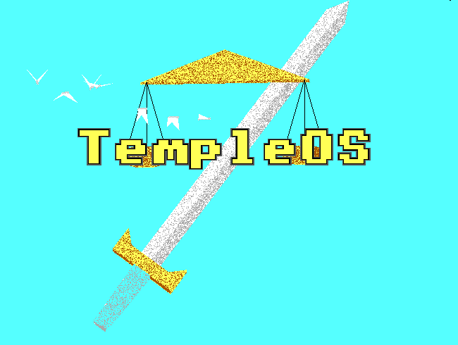

Archive


YouTube videos/playlists
- cyberwasbored (my channel)
- It Only Takes Two Weeks by The Math Sorcerer
- How to spot a rationalization by Julia Galef
- But what if... by Ali Gallop
- The Insane Complexity of the Semiconductor Global Supply Chain by Micro
- The Bonkers Theory That Ancient Civilizations Weren't Conscious by Tor's Cabinet of Curiosities
- Chip design from the bottom up – Reiner Pope by Dwarkesh Patel
- Silicon Vision - Misha Mahowald & Carver Mead by William Edward Hahn, PhD
- Probability Theory is an Extension of Logic by 3cycle
- Self-Play for LLMs, AI for Biology, Formal Verification, and More | YC Paper Club by Y Combinator
- Why I Still Play Age of Empires II After 25 Years by Soul Tomato
- The FASTEST introduction to Reinforcement Learning on the internet by Gonkee
- Talks by Yann LeCun (playlist)
- Alexander’s Speech That Crushed a Mutiny by Epic History
Blogposts
- Spikenets (my newsletter)
- Evolution Strategies by Lilian Weng
- An Overview of Deep Learning for Curious People by Lilian Weng
Books
- The Metamorphosis of Prime Intellect
- Zero to One by Peter Thiel
- Thus Spoke Zarathustra by Friedrich Nietzsche
Music
- D.O.U.B.T!!! ~愛の駆引きはダ☆ウ☆ト☆~ (Kors K vs. Omega Force Remix) by 4 Skips vs. Floorbreaker
- Rolandskvadet (Medieval Song of Roland)
- Halcyon and On and On by Orbital (Hackers, 1995)
- Toquz Oyuz by Farya Faraji
- Touman's Song by Farya Faraji
- Mishima: Closing by Kronos Quartet / Philip Glass
- The Epic of Gilgamesh in Sumerian by Peter Pringle
- Gilgamesh: Lament for Enkidu by Peter Pringle
- Homer: Hektor Slain by Achilles by Peter Pringle
- La Serenissima by Rondò Veneziano
Other media
Films
- Hackers (1995)
- The Matrix (all of them)
- Ghost in the Shell (1995)
- Pi (1998)
Shows
- Cyberpunk: Edgerunners (seasons 1 & 2)
- Serial Experiments Lain
- Neon Genesis Evangelion
Other cool links
- How to Attract Top Scientists and Build a Vibrant Technology Industry by Yann LeCun
- Formal Conjectures by Google DeepMind (open conjectures formalized in Lean)
- VLSI Analogs of Neuronal Visual Processing, Misha Mahowald's PhD thesis (Caltech, 1992), the silicon retina
- TempleOS by Terry A. Davis
Links
Site navigation

My button
If you liked my site, add my button =]
Banners

Use Temple OS

Listen to Aphex Twin

Play Cyberpunk 2077
"An idiot admires complexity, a genius admires simplicity"
— Terry A Davis